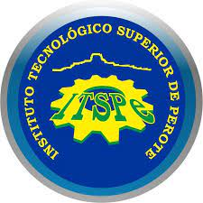

Instituto Tecnológico Superior De Perote es una institución de formación profesional, con presencia según matrículas en 2022 en Veracruz de Ignacio de la Llave centrando la mayor parte del estudiantado en los municipios de Perote En 2022, Instituto Tecnológico Superior De Perote tuvo 1,361 matriculados, de los cuales 55.4% (754) fueron hombres y 44.6% (607) fueron mujeres. En 2022, la institución tuvo 167 egresados, de estos 90 fueron hombres y 77 mujeres. Las áreas con más egresados fueron Ingeniería, manufactura y construcción (81), Administración y negocios (42) y Agronomía y veterinaria (24).
